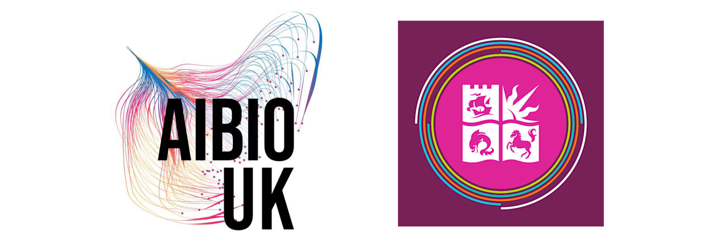

AI, Engineering Biology and Beyond 202615-16 January 2026, Bristol, UK |
Version | ||
|---|---|---|---|
The AIEBaB hack-a-thon has been made possible through the generous support of AIBIO-UK, a BBSRC-funded network to support and enhance engagement between the Bioscience and AI communities in the UK, and the Jean Golding Institue that is a central hub for data science and data-intensive research at the University of Bristol.

|
Time |
Description |
|
9:00–9:30 |
Arrival and registration |
|
9:30–9:45 |
Welcome and outline of the day |
|
9:45–10:30 |
Establishing teams and selecting a problem strand |
|
10:30–16:30 |
Hacking on projects |
|
16:20–17:00 |
Project presentations |
The hack-a-thon will take place on the main campus of the University of Bristol. Signage at the entrance to Queen's Building will guide you to the main event space.
Bill Brown Design Suite, Queen's Building, Woodland Rd, Bristol BS8 1TH, UK
All participants will need to select one of the following strands to compete within. A prize will be given for each strand with entries judged on three core criteria: (i) creativity, (ii) usefulness, and (iii) potential impact. Judging will take place at the end of the day with each team/participant having up to 5 minutes to demo their creation. Winners will be announced at the end of the main conference.
1. AI-ready Data for Engineering BiologyExplore what AI-ready data might look like; define the standards, formats and supporting tools to enable its creation/maintenance. Engineering Biology data is often distributed across many sources, lacks sufficient metadata, is difficult to integrate, and varies in quality. How might AI help solve some of these issues? Potential ideas include:
|
2. Making Bioengineering FunDevelop an AI powered solution to daily problems faced in the lab, or anywhere else in engineering biology research. Don’t worry about how useful your solution might be to others, just get creative and have fun! Potential ideas include:
|